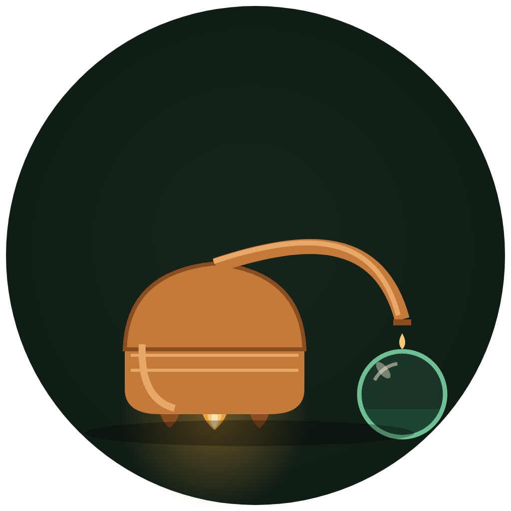

ALEMBIC

ALEMBIC
What is Alembic
Alembic (ALM) is a proof-of-work network running RandomX on ordinary processors. The name comes from the alambic — the still: a sealed vessel whose geometry is fixed before the fire is lit. Nothing is added mid-run; the spirit that arrives in the receiver was determined entirely by the shape of the apparatus. Alembic applies that discipline to a currency. Every governing constant — total supply, block cadence, stage-1 reward, halving rhythm, difficulty rule — was committed to public source code and published before block zero existed.
No dev fee, no treasury address, no unlock calendar. Zero coins existed before the genesis block; every coin in existence came out of a block reward, paid in full to the miner who assembled that block.
Emission schedule
| Block time | 160 seconds |
| Blocks per day | 540 |
| Stage-1 reward | 41 ALM |
| Daily issuance, stage 1 | 22,140 ALM |
| Halving interval | 690,000 blocks (~3.5 years) |
| Max supply | 2 × 41 × 690,000 = 56,580,000 ALM |
| Premine | 0 |
| Dev fee | 0 |
Why a still
Sealed geometry
The vessel's shape decides the product. In Alembic, the code decides everything — and the code was published first.
Nothing added mid-run
No dev fee, no treasury, no unlock calendar. The reward arrives in full to the miner, like distillate into the receiver.
Ordinary fire
RandomX is memory-heavy and re-aims at every block, so a warehouse of special machines keeps no lasting edge over one desktop CPU.
Readable apparatus
Full source, explorer, checksums and documentation are public. Verify the vessel yourself before you light anything.
Get started
| Wallet (Windows) | downloads/ |
| Mining guide | MINING.md |
| Wallet guide | WALLET.md |
| Whitepaper | WHITEPAPER.md |
| Block explorer | explorer/ |